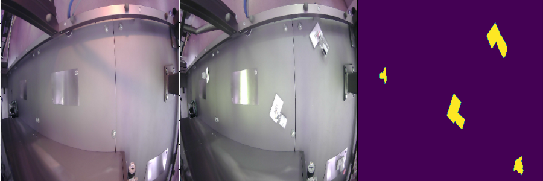

Anomaly Detection
in the Industry

Agenda
- The problem
- Some approaches
- Conclusions
Anomaly Detection

A Comprehensive Real-World Dataset for Unsupervised Anomaly Detection
Example in the pharma

Challenges: invariants
Lighting conditions (illumination, reflects)

Not completely invariant to pose

Generality

Some other challenges
Real-time: fast model evaluation
Cheap: one system, many cameras
General: one model to rule them all!
A Comprehensive Real-World Dataset for Unsupervised Anomaly Detection
A probabilistic view

A more realistic view

{kind=link}
Image Embeddings

Discriminative
Anomaly Detection

Classification:
problem factorisation

Both models can be:
- Deep: high representation/discrimination power;
- Shallow: fast model training (feasible in production).
One Class Classification (OCC)
PaDiM and SPADE
- Backbone as feature extractor (such as ResNet);
- pixel/patch-level features by pyramid-matching;
-
pixel/patch level OCC:
- PaDiM: pixel-wise normal pdf;
- SPADE: KNN (memory-bank) + threshold.
PatchCore
- The more the images the higher the performances.
- The memory-bank gets huge, thus retrieval gets slow.
- Optimise the memory bank (core feature set).

GraphCore
-
Orientation-invariance missing in PatchCore...
...more images needed to compensate. - Idea 1: augment the training-set.
- Idea 2: invariant features from augmented data.
REB: REducing Bias
- SSL for domain adaptation with defect generation
- Local Density KNN

REB: SSL for domain adaptation with defect generation

REB: Local Density KNN
Teacher-Student
Embed anomalies in different spaces

Change-Detection

Generative Anomaly Detection (reconstruction-based)

Autoencoder-based AD
Idea: train a generator on goods, generate and compare.GAN-based AD: GANs
Do you remember one-directional GANs?
GAN-based AD: BiGANs
Can we learn better features using them?
GAN-based AD: CBiGANs
Double-autoencoder trained with WGAN objective and consistency loss:Mix: EfficientAD
Components:
-
Teacher-Student:
- local (feature-based)
- example-mining loss
-
Auto-Encorder:
- global (logical)
- student generating also AE output
Quantized features: DSR
Encode high-level features in a codebook

U-Net for anomaly-mask synthesis
U-Net for anomaly-mask upsampling
DSR: generate normal images
Conclusions
Anomaly Detection in the industry
Deep-Learning provides informative embeddings.
Models are becoming more and more flexible...
...by means of fast adaptation on the edge.